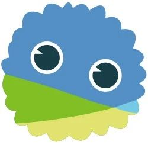
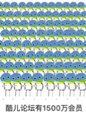
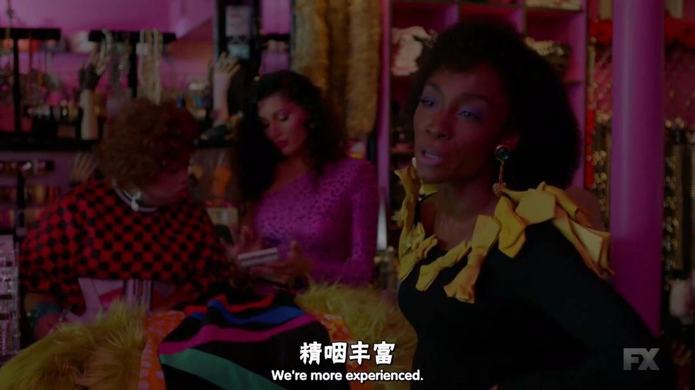
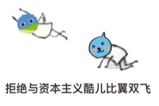
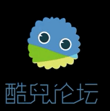

酷儿论坛行话指南

身为一位论坛qq群或微信群里的小萌新，你是否对某些不认识的奇怪的人时常挂在嘴边的某些奇怪的词汇感到摸不着头脑？
别担心，这篇指南助你快速成为“酷儿人”。

·基础篇·
1. 潭or泥潭
坛or你坛的谐音，这是酷儿论坛的小伙伴们对论坛的爱称。“潭”象征着酷儿论坛深厚的历史文化积淀，毕竟我们是成立于2002年的长寿机构呢！
2. 冒刺
MOTSS (member of the same sex)的谐音，是酷儿论坛的英文名。酷儿论坛的前身是浙大校内BBS的motss板块，同时期许多高校的同志论坛都采用motss这一名称。现在我们论坛的地址为 motss.info。但不只是 same sex，酷儿论坛服务于所有 LGBTQ+ 人群。
3.瓜瓜
酷儿论坛的吉祥物，原型是苦瓜。体现了学生性少数群体苦大仇深却依然苦中作乐的乐观精神（这句话是我乱说的）

4. 作为ai的瓜瓜
在微信群里的管理员瓜瓜是一位ai，负责接待各位想要加入论坛微信群里的小伙伴，以及微信群的管理。工作时间不确定，画风经常变化，但ta无时无刻都在watching you！此外，保护群主瓜瓜的安全，人人有责。
5. 酷儿论坛有1500万会员其中750万是温州人

此处使用了夸张的修辞手法，体现了酷儿论坛深受杭州及周边地区（特别是温州）的学生性少数群体的喜爱。
但酷儿论坛的会员遍布全球各地，遍及欧美亚非，这是真的哦！
6. 惹、噜、厚、嘤、nobody cares、I don't know her
一些酷儿论坛会员常用的语气助词，其中部分来自于“淋语”。使用主体不限于男同性恋，只要喜欢你就可以用！酷儿论坛站长阿园本人就是一位淋语爱好者。


·进阶篇·
7. 资本主义酷儿
知名饮料品牌，以“瓜瓜”为代表的酷儿论坛的左翼 “酷儿” 坚决与资本主义酷儿划清界限！

8. 反对男同性恋霸权主义
酷儿论坛的指导思想之一。酷儿论坛此前对除男同性恋之外的其他性少数群体（lbtq+）关注不足，我们在过去几年中一直致力于转型成为更加性别友好的机构，宣传多元性别知识及性别平等理念。你们不欢迎 gay？当然不是啦！不过，我们希望，各种身份认同的小伙伴都能在酷儿论坛里愉快地玩耍。
9. 去浙大中心化
理由同上。尽管酷儿论坛从浙大起家，但目前，我们已经将势力范围延伸到了浙大、杭师、小和山和下沙等地区。我们欢迎来自更多学校的小伙伴都加入我们呀！

好了，本次教学就到这里，学会了吗？
那就快点击“阅读原文”或者扫描下方二维码来报名成为泥潭志愿者吧！